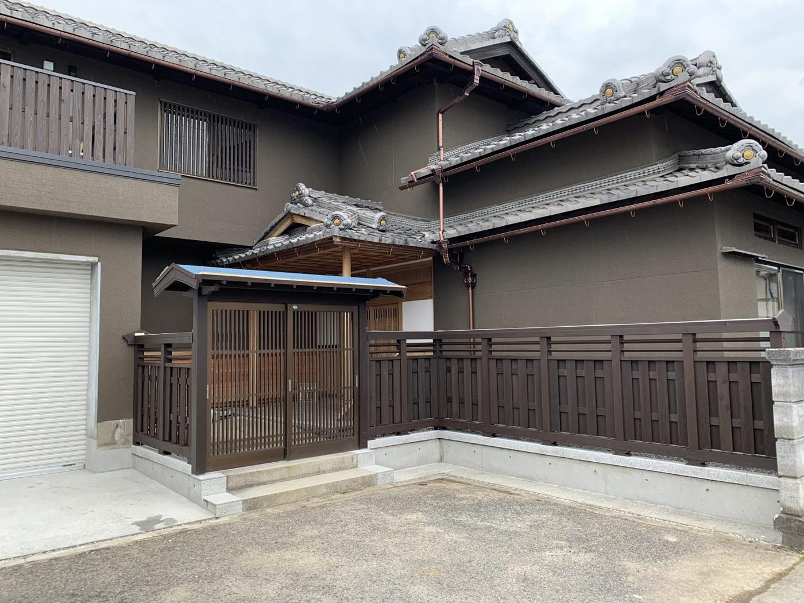
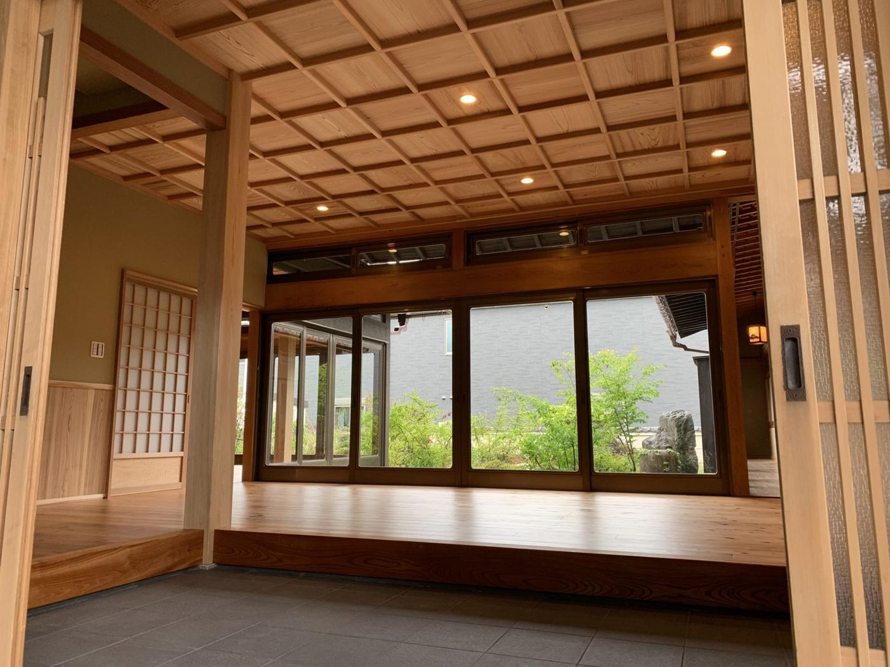
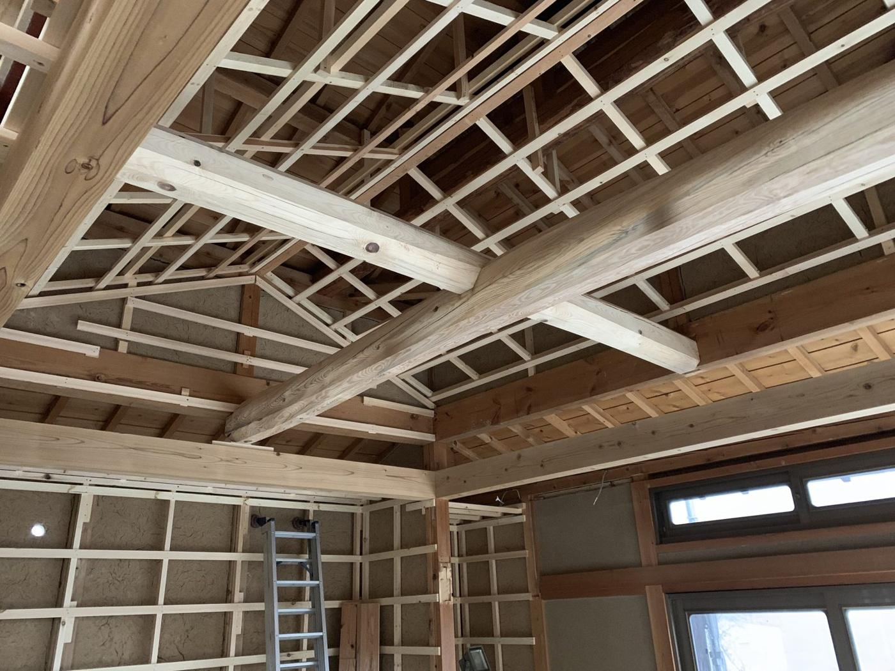
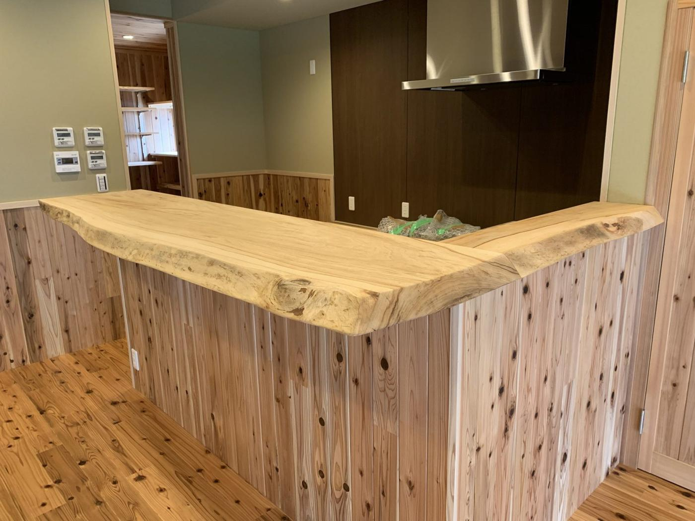
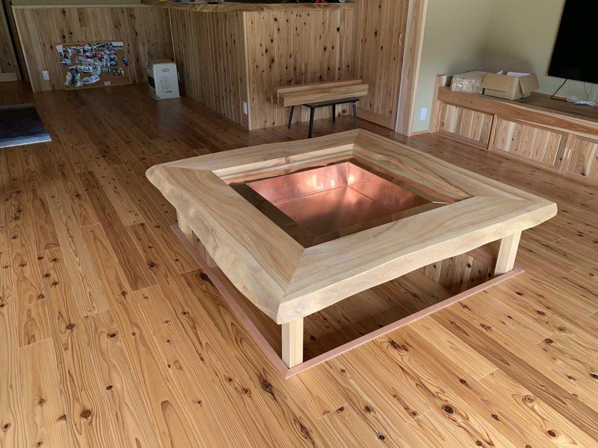
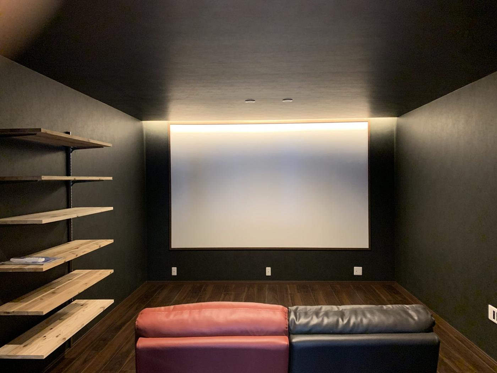

施工事例 ／ 改修
CASE ― 改修
玄関まわりから内装まで、大規模リフォーム
大規模なリフォームのご依頼でした。無垢材を要所に使い、囲炉裏こたつやシアタールームなど、施主様こだわりの住まいが完成しました。

→

場所
山下さん確認
工事
大規模リフォーム
竣工
2019年
期間・費用の目安
山下さん確認
PROCESS
工程と、仕上がり
01
改修後の外観
門・玄関まわりも整えました。

02
玄関の内側
木の質感を生かして。

03
化粧丸太梁
新たに化粧丸太梁を設けました。

04
無垢のカウンター
無垢材のカウンター。

05
囲炉裏こたつ
囲炉裏の掘りこたつ。

06
シアタールーム
シアタールーム。
